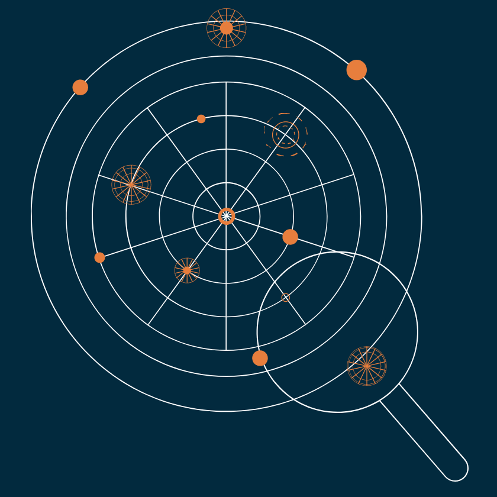

Get to know your birth chart
In astrology, every combination of planet and constellation - or zodiac sign - has a specific meaning.
Unlike the broad and vague magazine horoscopes that only use your sun sign, we use a complete picture of the sky when and where you were born to generate your full birth chart.

Unlike the broad and vague magazine horoscopes that only use your sun sign, we use a complete picture of the sky when and where you were born to generate your full birth chart.
Fill in your details to make your chart. All you need is your date, time and place of birth.